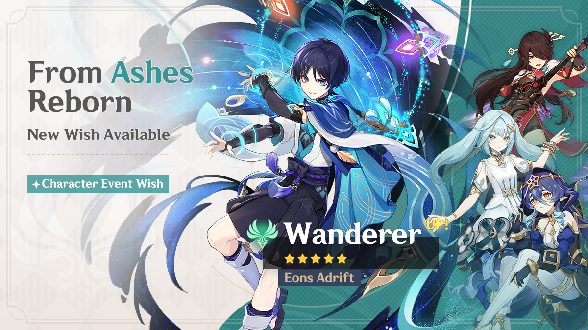
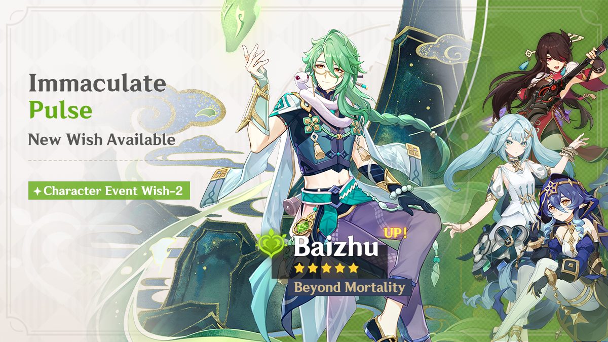
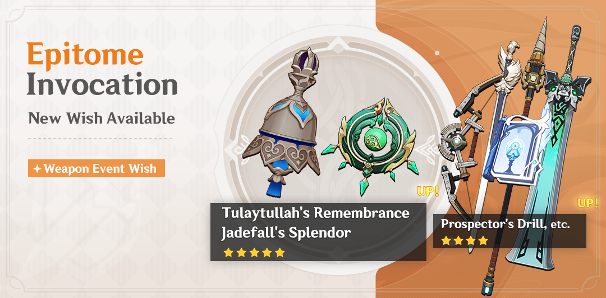

Event Wish "From Ashes Reborn" - Boosted Drop Rate for "Eons Adrift" Wanderer (Anemo)!
〓Event Wish Duration〓
2024/5/14 18:00:00—2024/6/4 14:59:00
〓Event Wish Details〓
● During this event wish, the event-exclusive 5-star character "Eons Adrift" Wanderer (Anemo) will receive a huge drop-rate boost!
● During this event wish, the 4-star characters "Fantastical Evening Star" Layla (Cryo), "Enigmatic Machinist" Faruzan (Anemo), and "Uncrowned Lord of the Ocean" Beidou (Electro) will receive a huge drop-rate boost!
※ Of the above characters, the event-exclusive character will not be available in the standard wish "Wanderlust Invocation."
※ This is for "Character Event Wish." The wish guarantee count for "Character Event Wish" and "Character Event Wish-2" is shared, and is accumulated between both "Character Event Wish" and "Character Event Wish-2." This wish guarantee count is independent of the guarantee counts of other types of wishes.
※ The "Test Run" trial event will be open during this event wish. Travelers may use fixed lineups containing the selected trial characters to enter specific stages and test them out. Travelers that complete the challenges will receive the corresponding rewards!
Event Wish "Immaculate Pulse" - Boosted Drop Rate for "Beyond Mortality" Baizhu (Dendro)!
〓Event Wish Duration〓
2024/5/14 18:00:00—2024/6/4 14:59:00
〓Event Wish Details〓
● During this event wish, the event-exclusive 5-star character "Beyond Mortality" Baizhu (Dendro) will receive a huge drop-rate boost!
● During this event wish, the 4-star characters "Fantastical Evening Star" Layla (Cryo), "Enigmatic Machinist" Faruzan (Anemo), and "Uncrowned Lord of the Ocean" Beidou (Electro) will receive a huge drop-rate boost！
※ Of the above characters, the event-exclusive character will not be available in the standard wish "Wanderlust Invocation."
※ This is for "Character Event Wish-2." The wish guarantee count for "Character Event Wish" and "Character Event Wish-2" is shared, and is accumulated between both "Character Event Wish" and "Character Event Wish-2." This wish guarantee count is independent of the guarantee counts of other types of wishes.
※ The "Test Run" trial event will be open during this event wish. Travelers may use fixed lineups containing the selected trial characters to enter specific stages and test them out. Travelers that complete the challenges will receive the corresponding rewards!
Event Wish "Epitome Invocation" - Boosted Drop Rate for Tulaytullah's Remembrance (Catalyst) and Jadefall's Splendor (Catalyst)!
〓Event Wish Duration〓
2024/5/14 18:00:00—2024/6/4 14:59:00
〓Event Wish Details〓
● During this event wish, the event-exclusive 5-star weapons Tulaytullah's Remembrance (Catalyst) and Jadefall's Splendor (Catalyst) will receive a huge drop-rate boost!
● During this event wish, the event-exclusive 4-star weapons Prospector's Drill (Polearm) and Range Gauge (Bow) as well as the 4-star weapons Favonius Sword (Sword), Rainslasher (Claymore), and Sacrificial Fragments (Catalyst) will receive a huge drop-rate boost!
● During this event wish, use Epitomized Path to chart a course towards a promotional 5-star weapon, such as Tulaytullah's Remembrance (Catalyst) or Jadefall's Splendor (Catalyst). For more information on Epitomized Path, go to the Wish screen and select Details in the bottom-left corner.
※ This is for "Character Event Wish." The wish guarantee count for "Character Event Wish" and "Character Event Wish-2" is shared, and is accumulated between both "Character Event Wish" and "Character Event Wish-2." This wish guarantee count is independent of the guarantee counts of other types of wishes.
※ Of the above weapons, the event-exclusive weapons will not be available in the standard wish "Wanderlust Invocation."